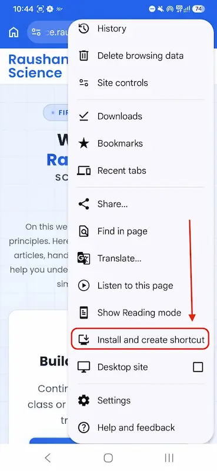
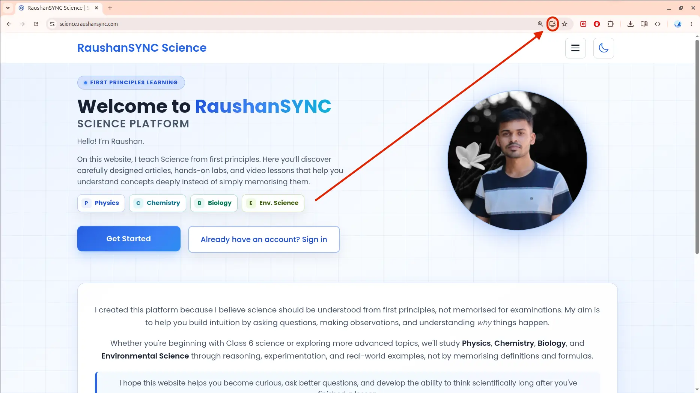
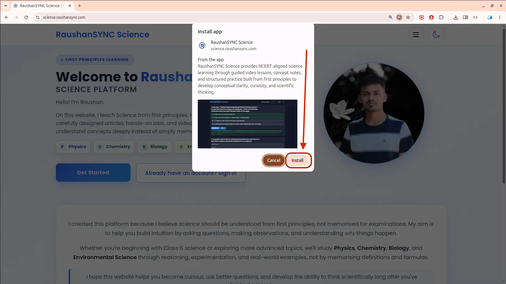
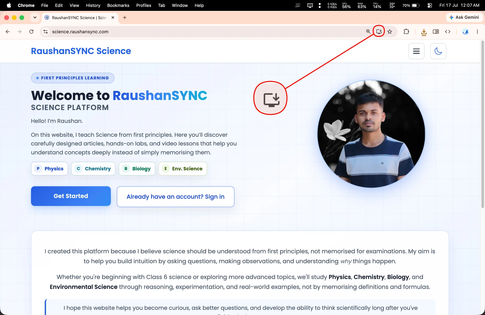
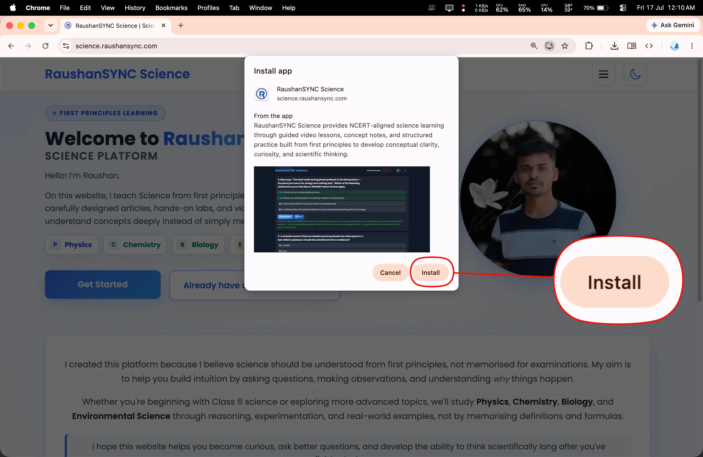
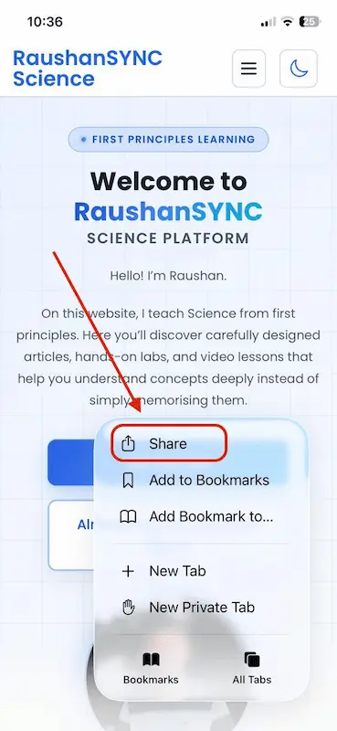
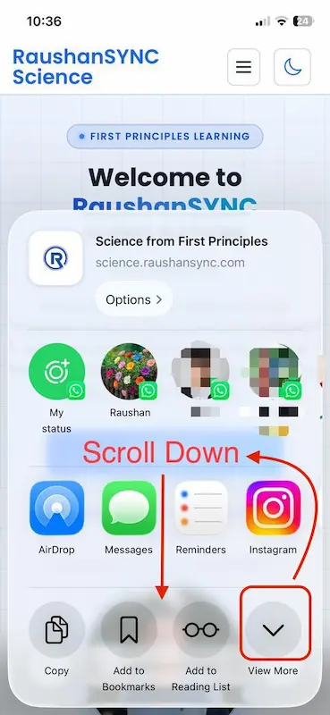
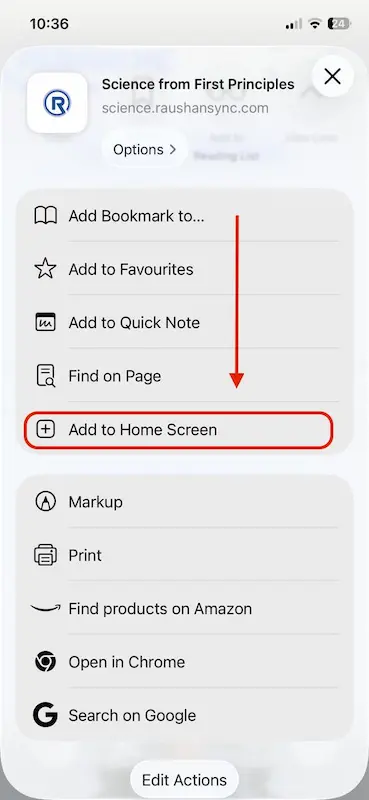
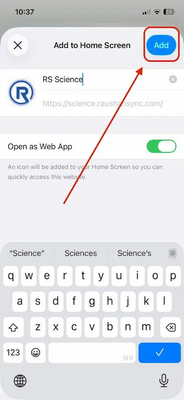

Step 1
Open science.raushansync.com in Google Chrome.
RaushanSYNC Science is a Progressive Web App (PWA) that can be installed directly from your web browser on Android, iPhone, iPad, Windows, macOS, and other supported devices. If you're already familiar with installing PWAs, you can install the app without following this guide. Otherwise, continue below for step-by-step instructions with screenshots.
Open RaushanSYNC Science directly from your Home Screen or Desktop without opening your browser first.
The app opens in its own window, providing a clean, distraction-free interface while you study.
Some pages and resources can remain available even when your internet connection is limited.
No need to search for the website every time. Simply tap the RaushanSYNC app icon.
Open science.raushansync.com in Google Chrome.
Tap the three-dot menu in the top-right corner of Chrome.
Tap Install and create shortcut. (or Add to Home screen, depending on your browser version).

Tap Install to finish the installation.
The same steps also apply to Linux when using Google Chrome or Microsoft Edge.
Open science.raushansync.com in Chrome or Microsoft Edge.
Click the Install App icon located at the right side of the address bar.

Click Install. The app will be added to your computer and can be launched just like any other application.

Although I am using Chrome on macOS, the process is the same for Microsoft Edge.
Visit science.raushansync.com.
Click the Install App icon in the address bar.

Click Install to complete the installation.

Although I am using an iPhone, the process is the same for iPad.
Note: You must use Safari to install the app on an iPhone or iPad. Chrome and other browsers do not support installing PWAs on iOS.
Open science.raushansync.com using the Safari browser.
Tap the three dot menu button (present at the bottom-right).
Tap on Share button.

Tap View more or scroll down.

Tap Add to Home Screen

Tap Add.
You can see the application on your home screen now.

Make sure you're using a supported browser such as Google Chrome, Microsoft Edge, or Safari (on iPhone). If the app is already installed, the Install option may no longer appear.
Yes. Installing and using the RaushanSYNC Science app is completely free.
No. RaushanSYNC Science is a Progressive Web App (PWA), so it installs directly from your browser.
Some pages and resources may remain available offline after they have been visited, depending on your browser and device.
Yes. You can uninstall the app at any time just like any other app on your device.
If you're having trouble installing the app, please contact us and we'll be happy to help you.